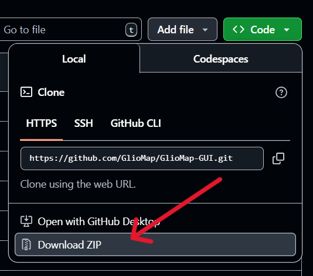

How to Download GlioMap
Note: GlioMap is available as an open-source project on GitHub. Follow these simple steps to download and get started.
1Click on Download Button
Navigate to the GlioMap homepage and click the "Download Now" button. This will automatically redirect you to the GlioMap GitHub repository where the source code and releases are hosted.
2Click on Code Option
Once you're on the GitHub repository page, locate and click on the green "Code" button. This will open a dropdown menu with download options.
3Click on Download ZIP
From the dropdown menu that appears after clicking "Code", select "Download ZIP". This will download the entire GlioMap project as a compressed ZIP file to your computer.

4Extract and Setup
After the download completes:
- Extract the ZIP file to your desired location
- Follow the installation instructions in the README file
- Ensure you have all required dependencies installed
- Run the application according to the provided documentation
Alternative: You can also clone the repository using Git if you prefer:
git clone https://github.com/GlioMap/GlioMap-GUI.git